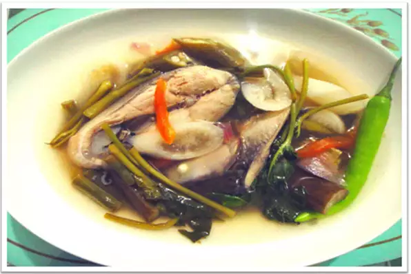

Sinigang

Description
In this Filipino fish recipe, bangus (milkfish) is stewed in a flavorful, slightly sour tamarind broth with lots of vegetables, an all-time favorite.
Ingredients
- 5 cups water
- 2 onions, sliced
- 2 tomatoes, sliced
- 1 pound milkfish (bangus), cut into 5 pieces
- 2 small eggplants, sliced 1/8-inch thick
- 1 cup fresh green beans, cut into 1-inch pieces
- 2 white radishes (labanos), sliced
- 5 pods okra, sliced
- 3 small green chile peppers
- 1 cup watercress (kangkong) leaves and stems
- ½ cup tamarind powder
- 1 pinch salt to taste
Steps
- Pour water into a pot.Boil for 5 minutes.
- Add onions and tomatoes, cover, and bring to a boil.
- Add milkfish, eggplants, beans, radishes, okra, and green chile peppers.
- Stir in watercress and tamarind powder.
- Cover, reduce heat, and season with salt.
- Boil for 5 minutes until fish is cooked through.